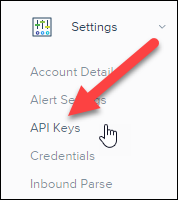
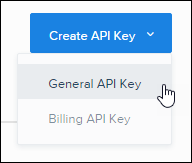
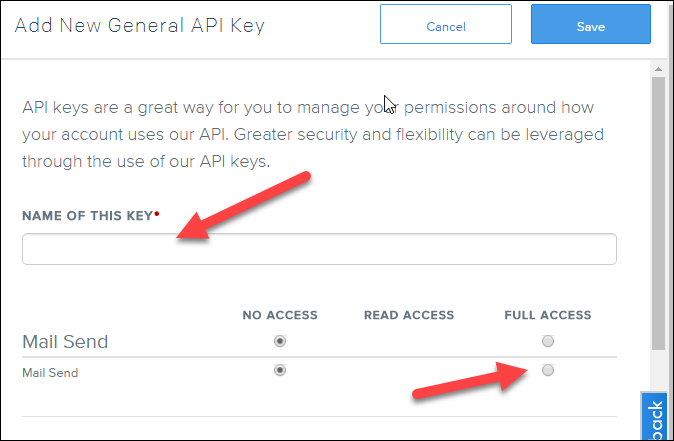

Duration 5-10 minutes.
The purpose of this demo is to show how an additional cloud component (the Azure App Service Logic App offering in this case) can be added to enhance an IoT solution.
This demo uses the setup from Demo 3.2
In this demo, you’ll customize the solution from Demo 3.2 to send email alerts using the SendGrid service. SendGrid let you create a free account and send 12,000 emails for free - enough for the demo!
Head to www.sendgrid.com
Create a free account
In the Settings section in the left-side menu, click API Keys

On the right side of the screen, select Generate API Key

Name your API key and select Full Access for the Mail Send setting.

Copy and store the key in a safe place, you’ll need it later in the demo.
Find the solution code from Demo 3.2.
In this demo, you’ll expand the Remote Monitoring to send emails when an alert is raised by the solution. You’ll do that by adding a Logic App that will be called from the solution. Emails will be sent by Logic App using a SendGrid account. Explain that the solution already has the code and the “hooks” to do this but that the Logic App has not yet been added.
Load the solution from Demo 3.2 in Visual Studio 2015.
Head to the Azure portal.
Click Add at the top of your resource group blade in the Azure portal.
Search for Logic App, select it and then click Create.
Fill out the Name and use the same Subscription and Resource group that you used when you provisioned your remote monitoring solution. Click Create.
When your deployment completes, you can see the Logic App is listed as a resource in your resource group.
Click the Logic App to navigate to the Logic App blade, select the Blank Logic App template to open the Logic Apps Designer.

Select Request. This action specifies that an incoming HTTP request with a specific JSON formatted payload acts as a trigger.
Paste the following into the Request Body JSON Schema:
{
"$schema": "http://json-schema.org/draft-04/schema#",
"id": "/",
"properties": {
"DeviceId": {
"id": "DeviceId",
"type": "string"
},
"measuredValue": {
"id": "measuredValue",
"type": "integer"
},
"measurementName": {
"id": "measurementName",
"type": "string"
}
},
"required": [
"DeviceId",
"measurementName",
"measuredValue"
],
"type": "object"
}
Click “+ New step” under your manual trigger. Then click Add an action.

Search for SendGrid - Send email and click it.

Enter a name for the connection, such as SendGridConnection, enter the SendGrid API Key name you created when you set up your SendGrid account, and click Create.

Add email addresses you own to both the From and To fields. Add “Remote monitoring alert [DeviceId]” to the Subject field. In the Email Body field, add “Device [DeviceId] has reported [measurementName] with value [measuredValue].” You can add [DeviceId], [measurementName], and [measuredValue] by clicking in the “You can insert data from previous steps” section.

Click Save in the top menu.
Click the Request trigger and copy the Http Post to this URL value. You need this URL later in this tutorial.
In Visual Studio, open the RemoteMonitoring.sln.
Open the ActionRepository.cs file in the Infrastructure\Repository folder.
Update the actionIds dictionary so that “<Http Post to this URL>” is replaced with the URL you noted from your Logic App:
private Dictionary<string,string> actionIds = new Dictionary<string, string>()
{
{ "Send Message", "<Http Post to this URL>" },
{ "Raise Alarm", "<Http Post to this URL> }
};
Save the changes.
Start a Command Prompt as an Administrator
CD to the directory where you unzipped the source code
Type: build.cmd cloud release [thedeploymentname]
Note that the deployment can take up to 10 minutes so now is a good time to take questions and maybe switch back to presenting the content. At some point, you’ll start receiving emails and you can go back to the portal and show the Logic App runs.

Head to www.azureiotsuite.com, select your provisioned solution and click on the Delete Solution button. Note that this can take around 10 minutes.